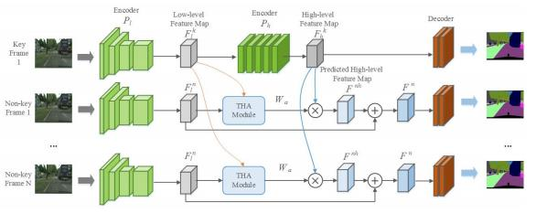

|
I am a third-year M.S. student at Institute of Computing Technology, Chinese Academy of Sciences, advised by Prof. Jian Wang and collaborated with Prof. Fuxin Zhang at Microprocessor Technology Research Center. I am particularly interested in computer architecture, virtualization, and heterogeneous computing. Before coming to ICT, CAS, I received my B.Eng. in Microelectronic Engineering from Central South University in 2018. During my undergrad, I was advised by Prof. Hua Deng. Email / CV / Google Scholar / Github |
{kind=link}
|
[Feb. 2021] Paper "BTMMU: An Efficient and Versatile Cross-ISA Memory Virtualization" is accepted to VEE 2021. |
|
|
|
|
BTMMU: An Efficient and Versatile Cross-ISA Memory Virtualization
Kele Huang, Fuxin Zhang, Cun Li, Gen Niu, Junrong Wu, Tianyi Liu ACM SIGPLAN/SIGOPS International Conference on Virtual Execution Environments (VEE), 2021 Paper (To appear) We present a novel method BTMMU to solve almost all known challenges in cross-ISA memory virtualization. BTMMU consists of a low-cost hardware extension of host MMU, a kernel module and a patched QEMU version. |
|  |
Junrong Wu, Zongzheng Wen ,Sanyuan Zhao, Kele Huang Pattern Recognition (PR), 2020 We present a novel method to focus on efficient feature propagation across frames to tackle the challenging video semantic segmentation task. |
|
Last Update: 03/12/2021
|